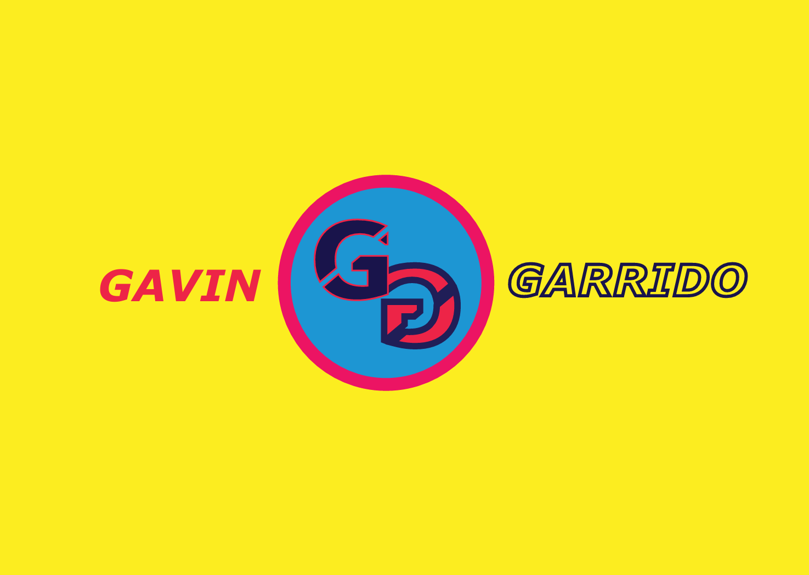
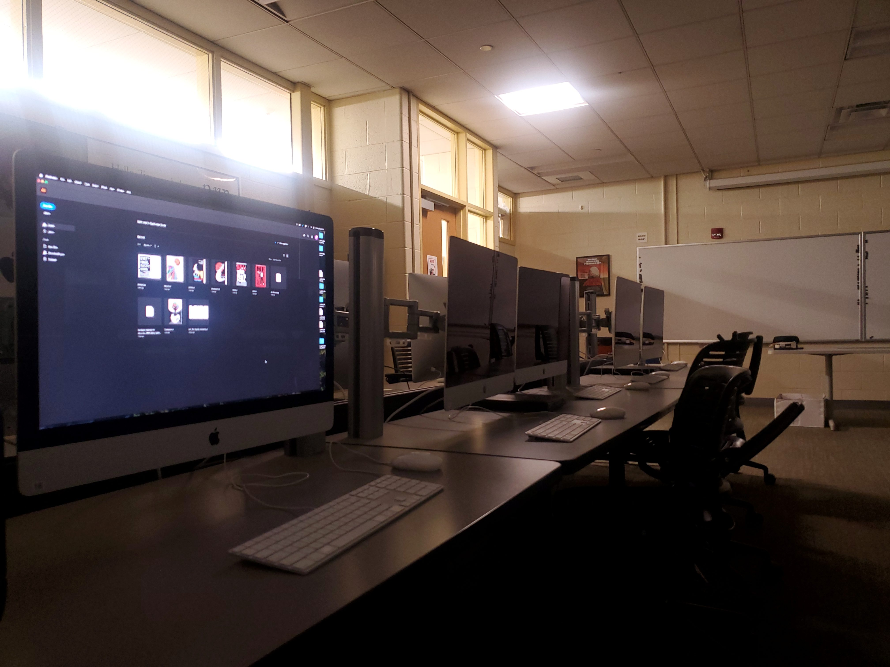

Portfolio
Gavin G.
Introduction
 My Name is Gavin Garrido and I am a passionate graphic designer and artist. I specialize in creating visually appealing and functional designs for various media, including print, digital, and web.
My Name is Gavin Garrido and I am a passionate graphic designer and artist. I specialize in creating visually appealing and functional designs for various media, including print, digital, and web.
Early Life Experiences
Throughout my early childhood, I was always doing some sort of extracurricular activity, whether it being swimming, taekwondo or just simple tutoring sessions, they helped me develop a well-rounded skill set and a strong sense of discipline.
All throughtout elementary to present day, I have always had a soft spot for art, drawing, painting and even digital media before I knew things like Adobe software. In the back of my mind, I always wondered how my passion for art would influence my academic journey.
Complicated History

Being a Graphic Designer was NOT the first choice of what I wanted to pursue as a career, instead it was Software Engineer, then Computer Science. Through the first semesters of my college education, I struggled to find a passion for coding as time went on and soon my lack of motivation came to bite me. I soon learned after taking an elective art course that I had a natural talent and passion for design, and thus began my pursuit of knowledge in the digital arts.


Software programs I use:
- Adobe Illustrator
- Adobe Photoshop
- Adobe InDesign
- Adobe After Effects
- Autodesk Maya